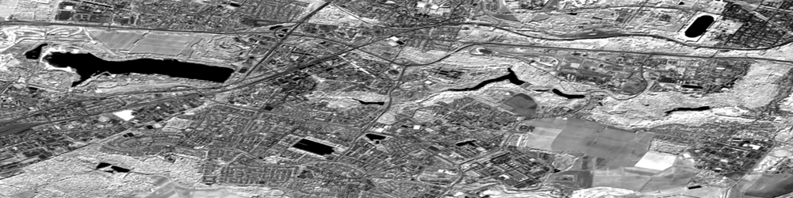
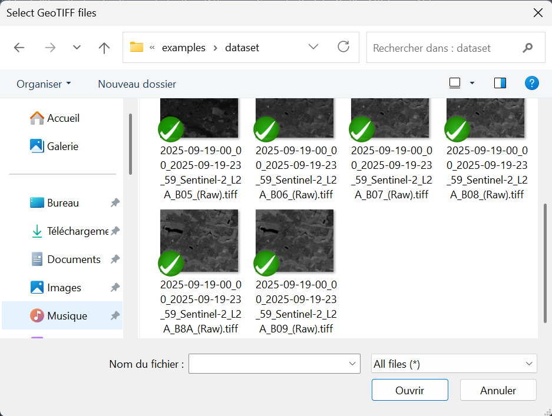
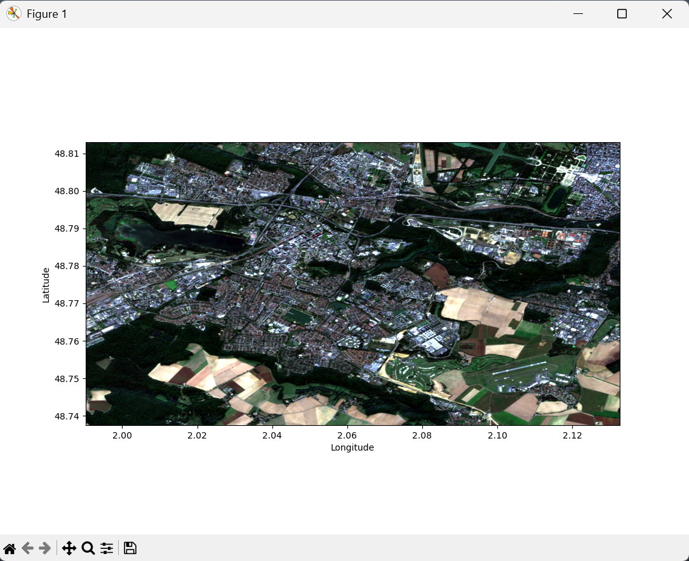
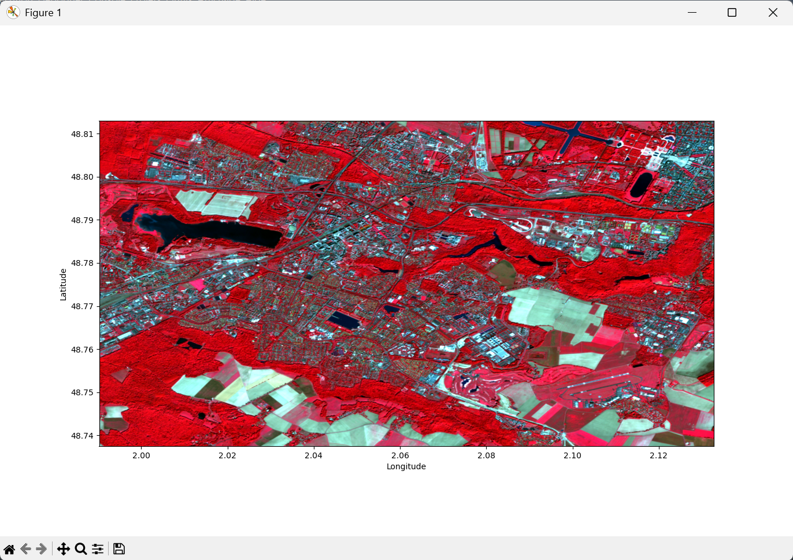

Importation d'une image raster

Pour commencer, nous allons utiliser PyRaTe pour importer une image satellite multi-bande à partir de fichiers GeoTIFF, puis réaliser un affichage géoréférencé à partir de ces données.
Raster et télédétection
Le "Ra" de PyRaTe est pour "Raster", et le "Te" est pour "Télédétection".
Si vous êtes maintenant familiers avec la notion de "télédétection", il est probable que vous n'ayez jamais entendu parler de "raster".
Il existe 2 grands types d'images : les images matricielles ou "raster", et les images vectorielles.
Comme leurs noms l'indiquent, l'une est définie par une ou plusieurs matrices 2D, l'autre par des vecteurs.
| Raster |
|---|
| Image constituée d'une (ou plusieurs) matrice 2D. |
| Chaque élément dans la matrice correspond à un pixel à afficher. |
| Les valeurs stockées à une position dans les matrices 2D correspondent à l'intensité des pixels dans différentes couleurs. |
Lors de vos projets de télédétection, vous manipulerez exclusivement des images "raster".
Importation de fichiers GeoTIFF
Vous trouverez dans le dossier "examples/dataset" de PyRaTe un jeu de 10 fichiers GeoTIFF.
| GeoTIFF |
|---|
| Le TIFF est un format d'image "raster" propriétaire, mais assez flexible, couramment utilisé en télédétection. |
| En effet, il permet d'enregistrer des métadonnées avec l'image, notamment les informations de géoréférencement. |
| Dans ce cas, on appelle le fichier un "GeoTIFF". |
Il s'agit d'une seule image satellite "raster" de Saint-Quentin-en-Yvelines, acquise dans 10 bandes différentes le 19/09/2025 par Sentinel-2.
Voici à quoi correspondent ces bandes d'acquisition de Sentinel-2 :
| Bande | Cible | Longueur d'onde | Résolution au sol |
|---|---|---|---|
| B01 | Aérosols | 443 nm | 60 m |
| B02 | Bleu | 490 nm | 10 m |
| B03 | Vert | 560 nm | 10 m |
| B04 | Rouge | 665 nm | 10 m |
| B05 | Red-edge | 705 nm | 20 m |
| B06 | Red-edge | 740 nm | 20 m |
| B07 | Red-edge | 783 nm | 20 m |
| B08 | Proche infrarouge | 842 nm | 10 m |
| B08A | Proche infrarouge étroit | 865 nm | 20 m |
| B09 | Vapeur d'eau | 945 nm | 60 m |
Pour importer ces différents fichiers GeoTIFF avec PyRaTe, utilisez la commande suivante :
band_list,band_bounds = PyRaTe.importation()
Apparait alors la fenêtre suivante :

Cherchez les fichiers GeoTIFF dans vos dossiers, sélectionnez-les et cliquez sur "Ouvrir".
La variable band_list contiendra alors une liste de matrices Numpy, chacune correspondant à une bande.
La variable band_bounds contient les limites géographiques de l'image.
Si les limites géographiques des différents "raster" importés ne sont pas les mêmes, un message d'erreur apparaitra.
| Nota Bene |
|---|
| Ici, chaque bande était enregistrée dans un GeoTIFF différent. |
| La fonction gère aussi les GeoTIFF contenant plusieurs bandes à la fois. |
Affichages RGB
Pour vérifier le contenu de nos GeoTIFF, on peut vouloir afficher une image en couleurs (RGB), géoréférencée, à partir des différentes bandes importées.
Le plus classique est de faire un affichage en "vraies couleurs" : la bande du "rouge" (B04) en rouge, la bande du "vert" (B03) en vert, et la bande du "bleu" (B02) en bleu.
Pour réaliser un tel affichage, utilisez la commande suivante :
PyRaTe.img_display(band_list,band_bounds,display_rgb=[3,2,1])
Le paramètre display_rgb vous permet de sélectionner dans band_list l'indice des matrices à utiliser pour le rouge, le vert et le bleu.
On sélectionne ici B04, B03 et B02 avec les indices 3, 2 et 1.
Voici la figure qui s'affiche :

Bien que les longueurs d'ondes perçues par le satellite dans ces 3 bandes ne correspondent pas exactement aux pics de sensibilité des "cônes" de la rétine humaine, cet affichage donne un ressenti "naturel" des couleurs.
En imagerie satellite, il est également classique de réaliser un affichage en "fausses couleurs" de la manière suivante : la bande du "proche infrarouge" (B08) en rouge, la bande du "rouge" (B04) en vert, et la bande du "vert" (B03) en bleu.
Pour réaliser un tel affichage, il suffit de reprendre la commande précédente, en modifiant le paramètre display_rgb :
PyRaTe.img_display(band_list,band_bounds,display_rgb=[7,3,2])
Voici la figure qui s'affiche :

Ce type d'affichage en "fausses couleurs" est particulièrement utile pour l'étude de la végétation : la chloropylle réfléchit fortement le proche infrarouge, ce qui permet de la faire ressortir en rouge dans l'image. Les contrastes entre zones urbaines, plans d'eaux et végétation sont également renforcés.
Est-ce bien ce que vous observez ?
Suivant l'application, on peut imaginer réaliser des affichages en "fausses couleurs" avec d'autres bandes d'intérêt.